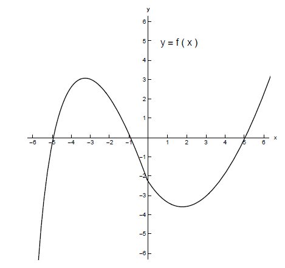

- (a)
- Use this graph to find the following: (Assume all values will be integers or \(+\infty \) or
\(-\infty \))
- (i)
- all \(x\) where \(f(x) = 0\),
- (ii)
- all \(x\) where \(f(x) > 0\),
- (iii)
- all \(x\) where \(f(x) < 0\), and
- (iv)
- all \(x\) where \(f(x)\) attains a local maximum and all \(x\) where \(f\) attains a local minimum.
- (b)
-
Without sketching the graph of \(f'\) find
- (i)
- all \(x\) where \(f'(x) = 0\),
- (ii)
- all \(x\) where \(f'(x) > 0\),
- (iii)
- all \(x\) where \(f'(x) < 0\), and
- (iv)
- On the following intervals, does \(f'(x)\) seem to be increasing or decreasing?
- i.
- \((-\infty ,0)\)
- ii.
- \((0,\infty )\)
- (c)
- Sketch a graph of \(f'\).
[2]